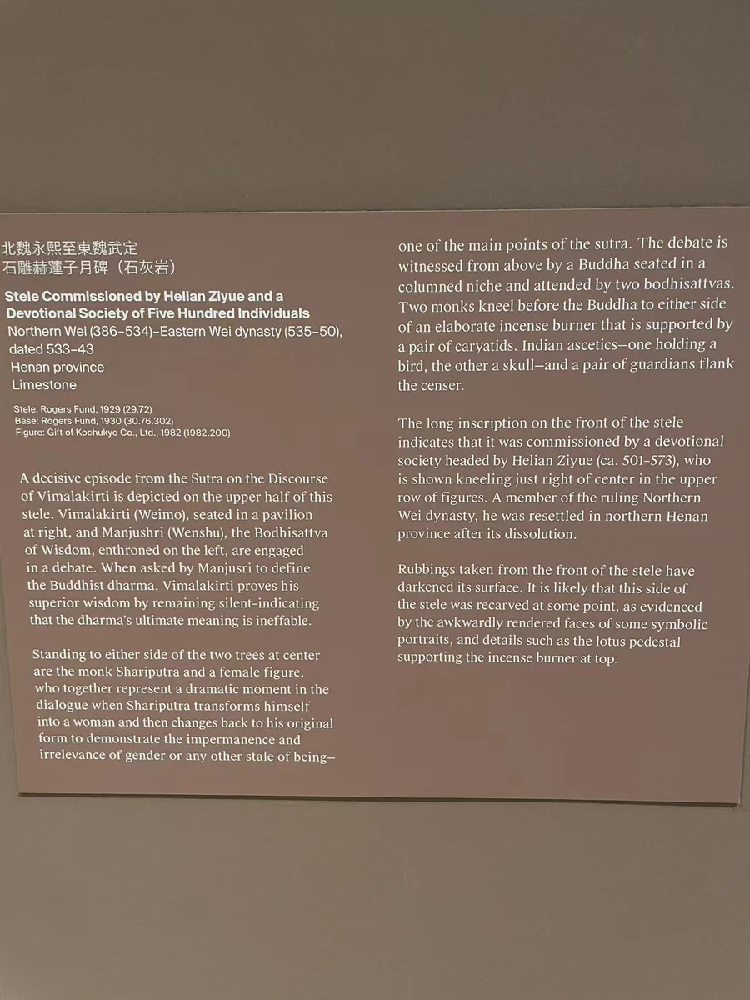

一面是问答，一面是群佛
正面上层以帷帐和树木组织场景，大都会将人物联系到维摩诘与文殊的问答。转到背面，小佛逐层排列，供养人的行列又形成另一种秩序。一个相对集中的交谈场面，与不断重复的礼拜对象，共同占据这块三米多高的石碑。 [1] [2]
IMAGES AND VOWS / 533—543
这件大碑所记录的，不只是刻成一尊佛像，而是多人修寺、营塔与供僧的共同工程。
石灰岩｜308 × 112.4 × 30.5厘米（馆录整体尺寸）

正面上层以帷帐和树木组织场景，大都会将人物联系到维摩诘与文殊的问答。转到背面，小佛逐层排列，供养人的行列又形成另一种秩序。一个相对集中的交谈场面，与不断重复的礼拜对象，共同占据这块三米多高的石碑。 [1] [2]
WORDS ON STONE
遂割損家資。率諸邑義五百餘人。本站白话今译于是拿出家中的财物，带领五百余位邑义成员共同参与。
六時精苦。不閑日夜。四事奉給。無替所須。本站白话今译僧众在昼夜各时勤勉修行，信众供给生活所需，使供养不致中断。
仰為皇家。願國祚永延。化隆遐劫。疆靜境安。民寧道澤。法界有形。等成正覺。本站白话今译为皇家祈愿，愿国运长久、教化远被，疆境安定、百姓安宁；并愿法界众生共同成就正觉。
寺主鎮東將軍林慮太守赫連子悅
維摩主輕車將軍勝州錄事參軍賀蘭思遠
大象主雷齊
光明主雷萇
八關齋主龐眾貴本站白话今译赫连子悦题为寺主，并列镇东将军、林虑太守官衔；贺兰思远题为维摩主，另有轻车将军、胜州录事参军等衔。雷齐、雷萇、庞众贵分别题为大象主、光明主、八关斋主。职名显示营造与仪式的分工，尚不足以还原每人的全部事务。
那齋□蘇叔招。齋主祖曹從事郡中正魏德令龐顏。關齋主龐眾貴。□□□馬曇顯。關齋主蘇珍輝。
蓋前劫莫初。心路非始。攸哉邈乎。靡測其源者也。
自天地替成。陰陽啓運。□靈起滅。業報相依。莫不染習色塵。驚馳愛慾。循環五趣。亦沉溺四流。雖復緣起一生。受神□識。形心電速。念念□留。假使靈芝九轉。行極四誠。奔□月以高昇。望玄宮而蹔息。猶亦退沒三塗。旋還六道。不說生死之因緣。詎云解脫之果報。
能仁悟迹前機。超□後際。降靈□室。□□□□□□駕四門。卻遺三殿。一心高蹈。成无上尊。至於化動十方。迴□三□。吞□大海。□納須彌。雖神照冥通。至德潛衍。莫不稱相取益。□物窺□。□□□之□。□真實之相。因化城以蹔止。演眾妙於鷲山。及慧日□□。法□□□。□□五□。□屬三千。藉有作之功。會無為之力。航法船於淨□。□常樂□□□。□□天人慕感。像法興靈。惟敬真顏。寄存寶色。
然州武猛從□汲郡□□□□□六鄉人秀老。遂割損家資。率諸邑義五百餘人。並著信情源。崇宗□□□□□千劫。故正順一時。起津梁於生滅之淵。運舟檝於貪慾之海。通四衢□□□□駕。擁三彰。竭八倒之流。兼義冠鄉閭。譽聞邦邑。莫不尚祇園而結慕。同□□□歸依。遂瞻影天竺。尚想□城。眷茲一山。僉共嘉力。其峻壁單懸。遙峰疊□。□□□□。帶□山川。
至如寶塔五層。則浮空曜晷。金棠百刃。則撫日承天。□木□□地□□□足並雀離之高妙矣。又真儀應像。則暉暎龕室。神光照爛。則□□太清。□空隱現。無復等級。威神相好。不可思議。
復即石以拓玄基。因木而架□□。引長廊而交暎。接戶牖以相經。堂廡霞舒。階墀綺合。雲生枅向。風出簷軒。花□秀美。光開七淨。泉流藻注。鴻澧八解。雖謝菩提吉祥之勝地。方□竹園伽藍之妙哉。
於□名僧德眾。煙集如林。栖息戒藏之門。優遊正定之路。□漏永消。脫諸塵網。般若之力既充。所作之功亦辨。六時精苦。不閑日夜。四事奉給。無替所須。而樹福良田。脩功淨土。亡情投軫。取會將來。既事光世上。業顯寰中。鴻名盛德。方傳不朽。祇掌寄言。雖不盡意。題表金石。其能已哉。
乃作銘曰。心塗眇極。性緒攸玄。三才始運。一氣□延。虛成報果。妄結因緣。有形分段。无色已遷。於唯大覺。隨感現身。權影昏俗。混相纓塵。汎茲永夜。濟彼長津。緣乖化隱。卷跡歸真。世崇遺教。瞻圖影則。寶剎層嚴。金槃累飾。簷宇高臨。長楹峻極。庭流桂水。園開淨色。既曰福地。實唯淨土。息隱桑門。淹留緇旅。功不虛棄。果不妄袪。德標千劫。聲傳萬古。
維大魏永熙二年歲在甲寅興建。至武定元年歲次癸亥八月功就。仰為皇家。願國祚永延。化隆遐劫。疆靜境安。民寧道澤。法界有形。等成正覺。
建塔、修寺与供僧由众人合力维持；功德的回向则从皇室与民众的安定，展开到法界众生。 [3]
碑文写“割损家资”，又写五层宝塔、相接的长廊与堂庑。其后是高僧集居、昼夜修行和持续的“四事奉给”。营造的终点因而不只是石刻落成：建筑要容纳僧众，日常生活要得到供养，捐出的财物才成为一项可以延续的宗教事业。 [3] [6]
“藉有作之功，会无为之力”把有形的劳动与解脱的理想接在一起。就这篇碑文而言，出资、建屋、刻像和供僧都是可以施行的事；愿望却要越出眼前工程，通向法界众生共同觉悟。这里是结合上下文的理解，而非已确认的佛典引句。 [3]
“寺主”“都邑主”“大象主”“光明主”“八关斋主”，比“五百余人”更具体地说明了组织如何运作。CBETA的榜题明确记有寺主赫连子悦；钟稚鸥、马德鸿对碑文与拓本的研究指出，李道赞以都邑主身份列在碑阴。二者是不同的人与不同职名，不是同一姓名的两种转写。 [4] [2]
钟、马依据赫连子悦在碑阳的位置和官职，推测他在此次营造中地位较高。研究同时区分碑阴的比丘、比丘尼、有职分者及一般男女信众。共同发愿把这些人连在一起，却没有抹平社会与仪式中的差别。谁是最初的发起者、谁居于工程首位，仍须结合残缺的开头与不同著录讨论。 [2] [5]
愿文结尾既求国祚长久、疆境安定与百姓安宁，也求“法界有形，等成正觉”。前者关乎众人赖以生活的秩序，后者把回向推向更广的众生。沿石碑读到这里，寺院的营造、参与者的姓名与未来的佛果，才成为同一篇愿文的不同层次。 [3]
近代金石著录曾记此碑立于河南淇县浮山封崇寺，后来被截断外运；钟稚鸥、马德鸿汇集的旧记，对流散年份仍有出入。这个近代所在地点与六世纪最初营造的寺院，须分别看待。大都会在1929年以Rogers Fund购藏。 [2] [1]
大都会以赫连子悦题录，台北故宫拓本题“李赞邑五百余人造像碑”，中研院用“李道赞等五百余人造像记”。这些是同碑的不同著录题名；李道赞与赫连子悦各有榜题和职分。 [1] [3] [6] [2]
原寺与后世改刻：大都会提出正面可能改刻。Ha Jungmin的2021年论文公开摘要认为铭文所见人名、官职与地理信息符合六世纪中叶环境，同时提出受损后改刻的可能；对原寺及主施主仍有不同判断。本页未读其全文，不能据摘要确定改刻年代、范围或具体施作者。 [1] [5]
碑文中的祇园、竹园、雀离是理解营建的佛教参照，不能据此认定工匠到印度测绘过这些建筑。现代展陈的碑、基座等部件各有编号，本辑仍按这座碑计一件。 [3] [1]
已读全文。图像见第125页，邑义职分与供养人排序见第126—127页；文中转引的早期金石著录未另行核读。
供养榜题与长碑文分别对读；未将不同录本拼成无缺的定本。
本页仅依据公开摘要与书目信息，未读论文全文。DOI：10.22835/ahvc.2021..27.009。
作品与现场展签摄影：Merton。铭文按各件所列已刊录文或提供的转录本呈现；白话解读为本站意译。公开资料中的缺字与异文保留在对应作品页。